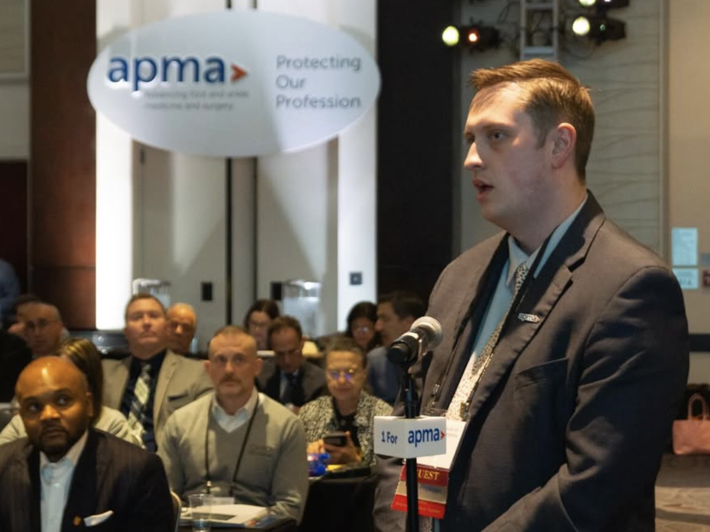
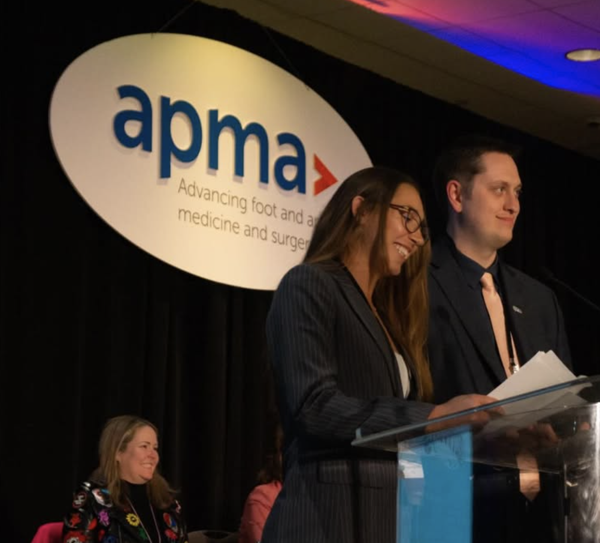
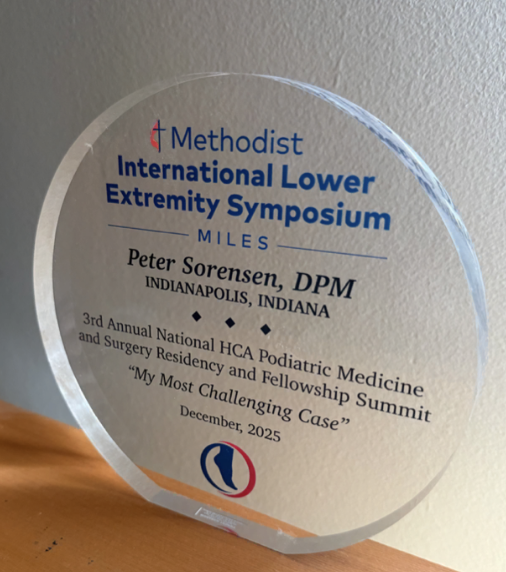

Peter Sorensen, DPM, MHA is a podiatric physician and surgeon with clinical interests in reconstructive surgery, wound care, and clinical podiatric medicine. He also holds a Master of Healthcare Administration — a degree he has put to active use in healthcare policy and legislative advocacy.
The first of five children born into an Air Force family, Dr. Sorensen grew up across five states before graduating high school in Santiago, Chile, then relocating with his family to southern Utah. It was a broken ankle and subsequent reparative surgery that first drew his attention to podiatry. He completed a Bachelor of Arts in Spanish at Southern Utah University and went on to earn his Doctor of Podiatric Medicine and Master of Healthcare Administration degrees concurrently from Des Moines University.
Dr. Sorensen is part of the American Podiatric Medical Association's 2025–26 Emerging Leaders Program (ELP) cohort and serves as Research Chief for the podiatry residency research team at the Arizona School of Vascular and Interventional Medicine (ASVI). He has traveled to Capitol Hill on multiple occasions to advocate for podiatric legislation — including the Diabetic Shoe Bill and Medicare physician fee schedule reform — and participated in the swearing-in ceremony of APMA's 100th President, Dr. Patrick DeHeer, DPM. At the 2026 APMA House of Delegates, he spoke in favor of the Resident/Fellow Delegation proposition that subsequently passed.
Alongside his clinical and advocacy work, Dr. Sorensen has spoken at multiple residency programs on integrating AI tools into research workflows and clinical practice. His Substack, Sole Intelligence, brings those conversations to a broader audience — practical, field-tested perspectives on which tools matter and which don't, written for physicians who don't have time for hype.
Outside of medicine, he mountain bikes, reads, plays piano, and — most importantly — spends time with his wife and three children.
Roles & Affiliations
APMA Emerging Leaders Program
2025–26 CohortMember of the American Podiatric Medical Association's 2025–26 ELP cohort, a program developing the next generation of podiatric leaders in clinical, legislative, and professional domains.
ASVI Research Chief
Podiatry Residency Research TeamLeads the podiatry residency research team at the Arizona School of Vascular and Interventional Medicine (ASVI), overseeing resident research initiatives including poster development, manuscript preparation, and presentation at national conferences.
APMA House of Delegates
2026 HODAttended the 2026 APMA House of Delegates and spoke in favor of the Resident/Fellow Delegation proposition on the floor as a guest delegate. The proposition subsequently passed.

Speaking in favor of the Resident/Fellow Delegation proposition · 2026 APMA House of Delegates
APMA National Leadership
Advocacy & CeremonyParticipated in the swearing-in ceremony of Dr. Patrick DeHeer, DPM as APMA's 100th President. Has been involved in APMA advocacy efforts at the national and state levels.

At the APMA podium with Dr. Savannah Santiago, DPM
Capitol Hill Advocacy
November 2025Traveled to Washington, D.C. to meet with congressional offices and advocate for podiatric legislation, including the long-term effects of Medicare physician fee schedule cuts on patient access. Sat alongside APMA 99th President Dr. Brooke Bisbee.
MILES Conference Faculty
Resident Faculty · 2025Served as resident faculty at the 2025 MILES conference. Received a presentation award.

Presentation award received at the MILES Conference · 2025
Credentials
Doctor of Podiatric Medicine
Des Moines University — College of Podiatric Medicine and Surgery
Master of Healthcare Administration
Des Moines University — earned concurrently with DPM
Bachelor of Arts, Spanish
Southern Utah University
Clinical Interests
Reconstructive surgery · wound care · healthcare legislation · AI in clinical practice
Follow the work on Substack.
Practical AI perspectives for clinicians, published regularly at Sole Intelligence.